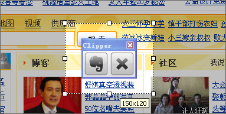
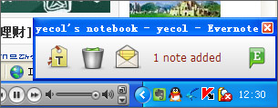
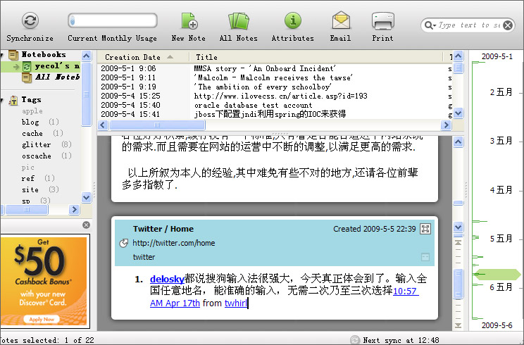
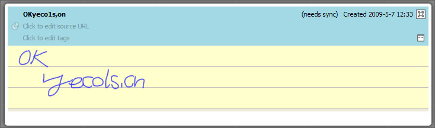
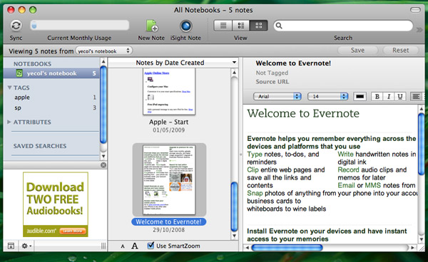

做网虫多年，有个习惯：上网时看到什么东西总喜欢随手存一下。看到好的图片会存到一个Resources的文件夹，一个有意思的网站会加到收藏夹，或者一些文章，随手就在桌面建个文本文件存下内容。要过段时间一起整理。由于这个原因桌面上杂乱无章，以“新建 文本文件”命名的就有七八个。收藏夹里也是东西繁多，发现找不到所需的东西。前几天在Mac系统下开到苹果官方的下载推荐页偶然发现了这个随记本本Evernote。
图片很清新，草绿色上面的小象有点像巧克力。看了页面上的介绍，觉得它的功能特色刚好符合我的需要：跨平台，同步到服务器，免费——好吧，有点像小云。

官网下载，安装，申请账号。发现真的不错。虽然免费版本的账号容量被限制在40M，不过以它“便笺”的定位是足够了。电脑的版本安装后会询问是否安装浏览器插件，选择同意，从此就尽情抓取和保存网络上的对你有用的信息吧。上图介绍：

这是在浏览器中按下截图快捷键后的界面，Evernote可以摘录网页上的选中的图片或文字，如果选中文字，甚至会连带文字的超链接一起摘录。

存入Evernote时右下角会弹出提示，并提供几个简便的后续操作：包括添加标签(tags)，删除，将该内容通过邮件发送给好友等。

Evernote的界面，甚至可以像下图一样创建涂鸦便笺。

晒晒Evernote的Mac版。Evernote通过设置同步时间间隔可将你PC,Mac,iPhone或其他手持设备上的便笺上传到服务器，并保持各设备上的便笺同步。

其他的如Evernote的全文搜索，创建日期分布等功能也值得称道，如果你也有随手摘录点有用信息的习惯的话去下载用用吧。免费~
www.evernote.com
很不错啊
[回复]